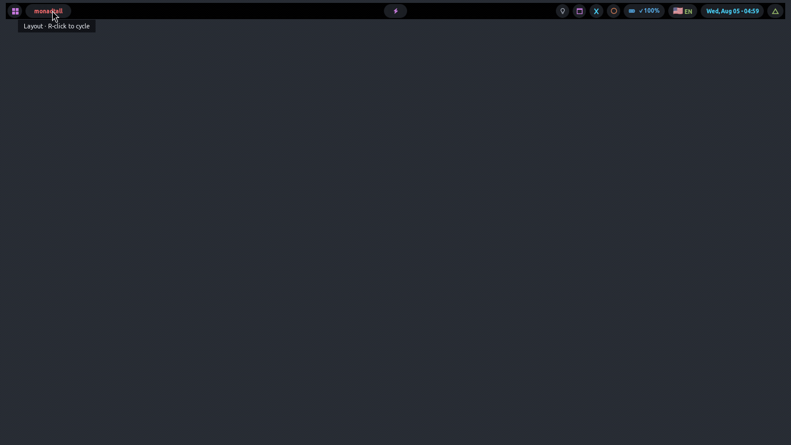
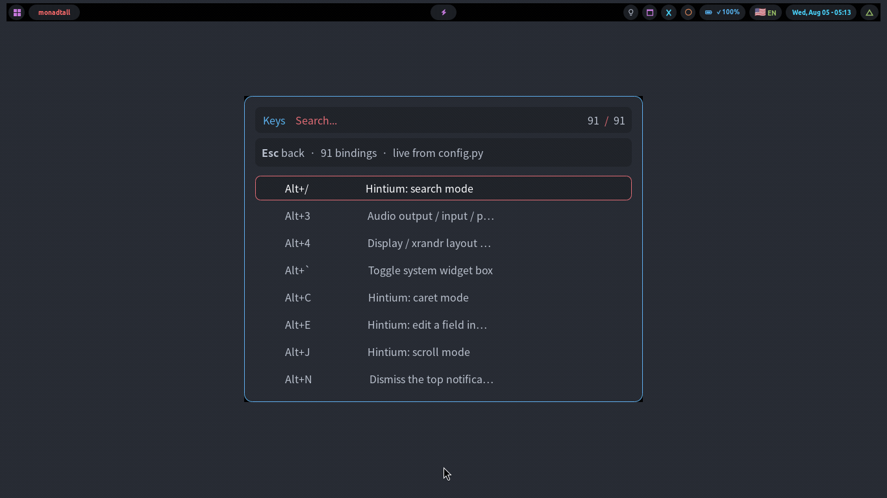
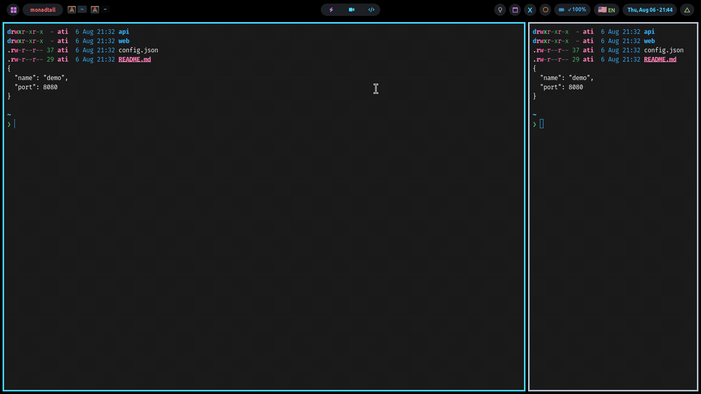
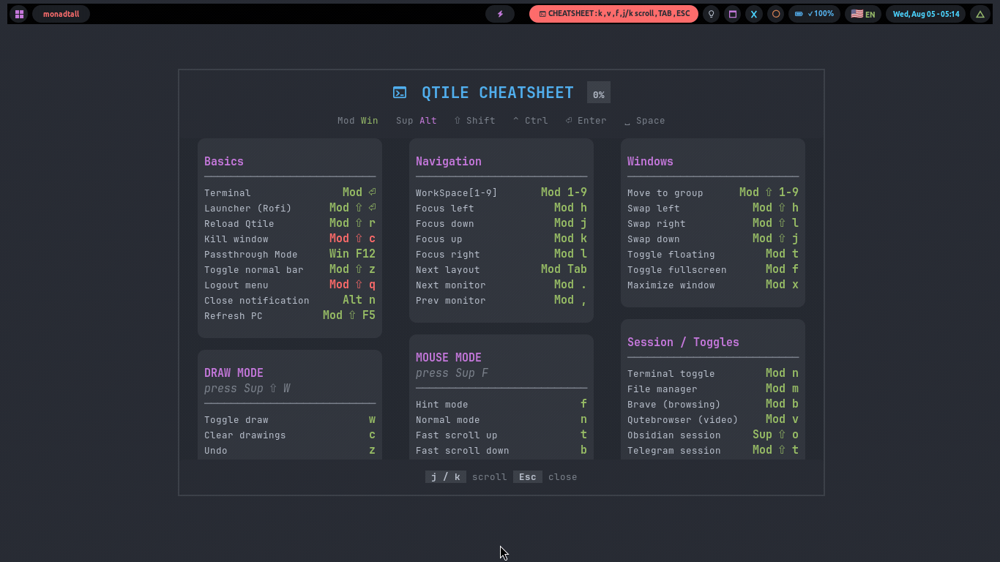
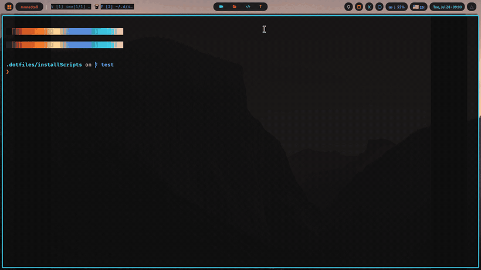

The bar and the popups
The bar is the strip along the edge of your screen. Almost everything in it does something when clicked.
Start by clicking the logo
Left-click the logo. It opens a menu answering "what can this computer do?". It is the fastest way to find anything.

| Click | What happens |
|---|---|
| Left | The documentation menu |
| Middle | A terminal |
| Right | The program launcher |
The menu has seven sections:
| Section | What it gives you |
|---|---|
| Keybindings | Every keyboard shortcut, searchable. Type a few letters to filter |
| Cheatsheets | Opens the on-screen shortcut cards for the desktop, Vim, or the shell |
| Documentation | Reads the manuals — nicely formatted, not raw text, and read-only so you cannot damage them by accident |
| Espanso | Your text-expansion shortcuts, and which of their settings are filled in |
| Appearance | Colour theme, text size, wallpaper, startup screen |
| System | What this computer is, which software is installed, what failed, your screen and graphics |
| Maintenance | The only section that changes anything. Housekeeping: leftover settings files to merge, unused software to remove, failures since you started up, and a growing download cache to clean. Each shows a live count |
Esc goes up one level, not out. Only at the top does it close the menu. Browse without reopening it constantly.

Why the menu is generated fresh every time you open it
A hand-written menu goes out of date the moment anything is added, silently. So every section is built from the live system when you open it. The shortcut list is read out of the configuration file the desktop is running.
The design decisions behind it are in How it works.
Everything else in the bar
| Click this | And you get |
|---|---|
| The camera | Screenshot — drag a box, it goes to your clipboard. Same as pressing Print |
| The CPU or memory number | A full-screen view of what is using your computer |
| The updates count | The update window — see qupdate |
| The disk indicator | How full your disks are |
| The battery | Charge level and whether it is charging. Only appears if the computer has a battery |
| The keyboard language | Switches to the next language |
| The clock | Today's and this week's plans and to-dos |
| The media controls | Left click: play or pause. Right click: previous track |
| The ✖ icon | Opens the wallpaper picker, or closes it if it is open |
| The layout icon | Right click: change how windows are arranged |
| The tooltip icon | Opens the welcome tour |
Hidden groups of icons
The bar cannot fit everything. Some icons live in groups you open when you want them.
| Press | Shows |
|---|---|
| Alt+` | The first group of system icons |
| Super+` | The second group |
| Alt+Tab | The system tray — icons put there by running programs |
Opening a keyboard mode closes whichever group is open and remembers it, so the mode's chip never fights for space.
The coloured chip
Press a mode shortcut and a coloured chip appears in the bar. It names the mode and lists the keys it accepts. Each mode has its own colour.
That chip answers "which keys work right now?". If the keyboard seems to have stopped responding, look there. You are probably in a mode. Esc always leaves.
Moving the bar
Super+Shift+z moves the bar between the top and the bottom of the screen.
The popup windows
Drawn by the desktop itself, not separate programs. Keyboard-driven, and they close when you leave.

| Popup | What it is for | Open it with |
|---|---|---|
| Sound | Choose speakers or headphones, set the volume of individual programs, pick a microphone | Alt+3 |
| Monitors | Set up a second screen: where it sits, its resolution, which is primary | Alt+4 |
| Wi-Fi | Connect to a network | Super+P then n |
| QR code | Share your Wi-Fi with a phone by scanning | s, inside the Wi-Fi popup |
| Bluetooth | Pair and connect devices | Super+P then b |
| Wallpaper | Browse and pick a wallpaper | Super+P then w, or the ✖ icon |
| Cheatsheets (three of them) | Shortcut cards for the desktop, Vim, and the shell | Super+Shift+k |
Every key each of them accepts is listed under Keyboard shortcuts → Modes.
Why these are not ordinary applications
They replaced four separate programs. Drawn by the desktop means no window to manage, nothing to put on a workspace, no rule about where it should appear. The Wi-Fi and Bluetooth tray icons are still there, but the pickers never open those old windows. More in How it works.
The cheatsheets

Super+Shift+k then k. Every shortcut on a card, with the key on the right.
They scroll: j and k move a few rows, Tab and Shift+Tab move a whole screenful, and the header shows how far down you are. v switches to the Vim sheet and f to the shell one. Esc closes. Modifier keys are drawn as symbols: ⇧ Shift, ⌃ Ctrl, ⏎ Enter, ␣ Space — the header carries the key to them.
Why they scroll instead of paging
Paging tied how much you could see to how big the window was. The only way to show more shortcuts was to be bigger, and they had grown to nearly the size of a 1366×768 screen, covering the very window you opened them to ask about. With a view that scrolls, size only decides how much you see at once.
The welcome tour
On your first login after installing, a short tour appears: welcome, workspaces, the shortcuts worth knowing first, finish.
It runs once. After that, open it from the tooltip icon in the bar.
Why a restart does not flicker

Restarting the desktop with Super+Shift+r, or changing your theme, would normally mean watching every window flash across the screen for two seconds. Instead a frosted overlay covers it, showing a card per window with its real icon and a progress indicator reporting genuine progress rather than a timer.
Your layout survives. Window sizes, which workspace each window is on, and which was focused all come back as they were. Windows you moved by hand stay where you put them.
If everything is too small or too big
The desktop measures your screen at login and sizes text, bar and icons to suit. Disagree with the result? Two clicks, not a settings file:
ui-scale-toggleThat opens a picker. Also in the logo menu under Appearance → UI scale. Or set it directly:
ui-scale --set 1.25 # pin a value; it survives re-detection
ui-scale --auto # go back to measuring automatically
ui-scale --show # what was detected, what is pinned, what is activeIt re-measures at every login, so plugging in an external monitor adjusts by itself.
Nobody has looked at this on a real 4K screen. The sizing has been checked
mathematically and it is correct: at double size everything is exactly twice as big. That is a
proof, not a photograph. If it looks wrong on yours, ui-scale --set is there.